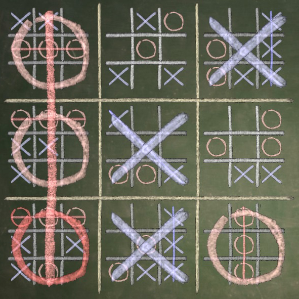
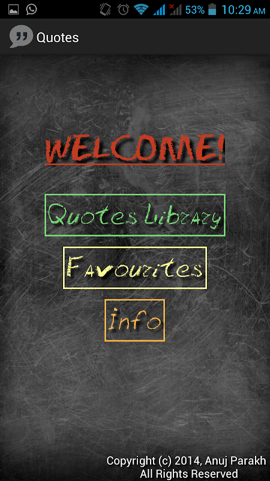

The Phantom Guitar is the perfect mix of two of my childhood hobbies: playing guitar, and arduinos/embedded development. I used the LightBlue Bean,
which is a bluetooth Arduino-style device with an acceloremeter. I wrote iOS and MacOS apps where the user can select guitar chords to play,
and then use the Bean like a guitar pick, strumming in air while getting the feeling and sound of playing a guitar. The idea was to recreate playing Air Guitar.
Three Stage Amplifier Speaker
As a final project for an Electrical Engineering course, me and my partner created a three stage amplifier speaker.
We used our knowledge of BJTs (Bipolar Junction Transistors) and were able to design an amplifier capable of playing loud-ish music for a long time.
Here is a youtube video of the same.
Ultimate Tic-Tac-Toe

Ultimate Tic-Tac-Toe is a much harder, complex version of the usual Tic-Tac-Toe game. I implemented a version
of this game by first creating the normal Tic-Tac-Toe board, then creating 9 of the same boards. It is a very challenging yet enjoyable game.
Traffic Light Controller
We designed a traffic light controller which is shown in the accompanying video. Using the Raspberry Pi for logic and control, the two LEDs act as stop lights.
The push button acts as a button for pedestrians to press when crossing the road. Then, the countdown provides them time to cross the road and then the light turns back to red.
Quotes Android App

In High School, I made a simple application called Quotes that displayed my favorite quotes. I also added handy features like saving your favorite quotes,
adding new quotes, and a neat chalkboard theme, which I thought was great at the time.